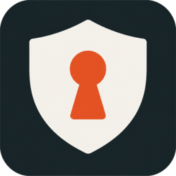

Accounts & access
KyIdentity
A shared sign-in and user directory for your organization. Manage people, strengthen authentication, and control access to connected apps.
Open source (MIT) · Self-hostedExplore KyIdentityMade by Busnes.app
Email, calendars, files, chat, notes, sign-in and the infrastructure behind them. Explore what each Ky project does, who it is for, and what it takes to run it.
Accounts & access
A shared sign-in and user directory for your organization. Manage people, strengthen authentication, and control access to connected apps.
Open source (MIT) · Self-hostedExplore KyIdentityRead and send mail through your own web interface, keep your existing IMAP and SMTP provider, and pair native clients to your server.
Self-hosted · Client availability variesExplore KyPostNotes & attachments
Encrypted notebooks for text, ink, attachments and tasks, with team sharing and content decrypted in your browser.
Open source (MIT) · Self-hostedExplore KyNotesCalendars & scheduling
Personal and shared calendars in your browser and CalDAV apps, with local accounts or optional KyIdentity sign-in.
Open source (MIT) · Self-hostedExplore KyCalendarFiles & sharing
Private and shared workspaces with file versions, WebDAV access and optional in-browser document editing.
Open source (MIT) · TestedExplore KyDriveTeam chat
A Matrix chat stack and operator console for your team, with KyIdentity sign-in, encrypted rooms and optional voice and video calls.
Open source (MIT) · TestedExplore KyMessagesBackups & recovery
A self-hosted home for sealed Ky backups, with offsite copies and recovery controlled by your chosen custodians.
Open source (MIT) · Self-hostedExplore KyRecoveryLocal network
Private service names, local DNS and blocklist filtering for your network, with optional replication and sealed backups.
Open source (MIT) · Self-hostedExplore KyDNSMonitoring
Read-only health and log monitoring for your Ky apps, with alerts sent to the webhook of your choice.
Open source (MIT) · TestedExplore KyPulseInfrastructure
Manage local and remote containers, inspect logs and resource use, and connect Docker hosts and Kubernetes clusters from one console.
Open source (MIT) · Self-hostedExplore KyYardChoose the products you need. Many support local accounts without the rest of the suite; KyDrive staff access and KyMessages chat need KyIdentity. You or your operator manage HTTPS, updates, storage and recovery. Each product page links its current setup requirements.
On your devices

Local authenticator codes and optional KyIdentity push approval. Android, iPhone and iPad, and Linux phones have different setup and delivery requirements. Keep recovery codes separately; TOTP entries have no backup or sync.
Pair Android, Mac and iOS, or Linux with your KyPost server. A client needs that backend; it does not connect directly to your mail provider. Check its repository for available packages.
Desktop sync for Windows, macOS and Linux is in development. Link a compatible M7 server in your browser and choose workspaces. OS keyrings hold credentials; sync is separate from an independent backup.
Getting started
Each product’s repository explains independent setup and required backends. Many products support local accounts; add KyIdentity when you need shared sign-in. KyRecovery stores sealed backups, while complete recovery may also require file snapshots, blob mirrors and custodian cards.
KyQuickStart is a pre-release installer for its supported catalog on prepared Docker or Kubernetes targets. KyQuickStart AI guides an agent through selected installations and records the result. Neither an installer handover nor a screenshot establishes working mail, phone MFA or a tested restore.
Something more specific?
These are our own projects. We also build focused applications around the work a small business needs to do.